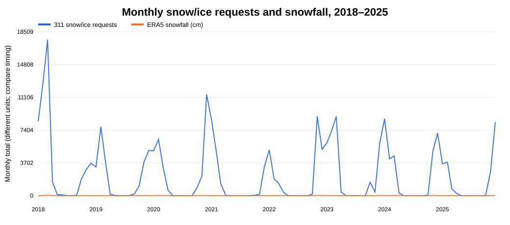
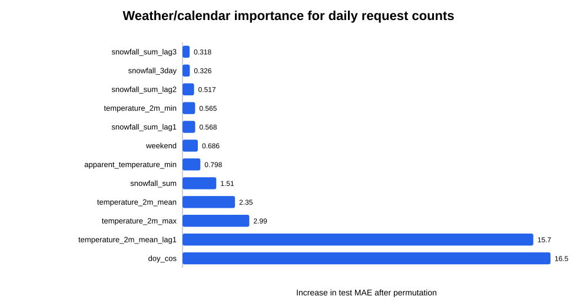
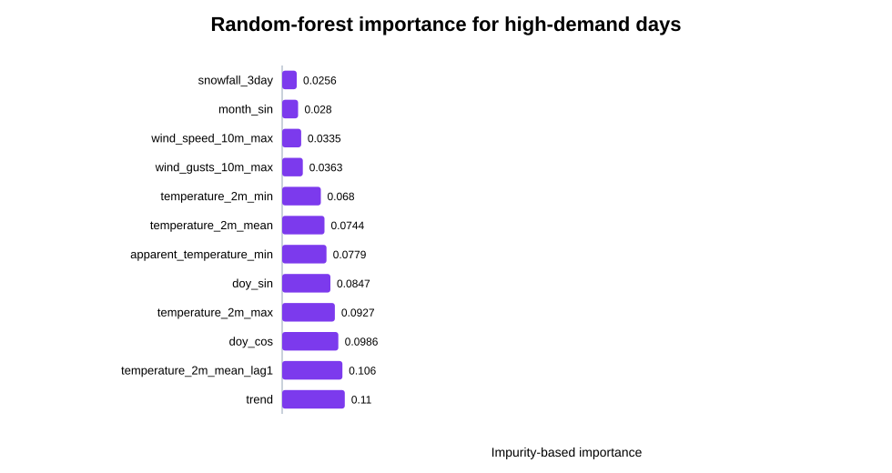

Calgary 311 Service Requests и историски временски услови
1. Податоци и методолошки дизајн
Користени се официјалниот Calgary 311 Service Requests сет и Open‑Meteo Historical Weather API. Временските податоци се ERA5 reanalysis за центарот на Калгари (51.0447, −114.0719), во зоната America/Edmonton. ERA5 е моделски реконструиран временски запис, а не директно мерење од една станица.
Snow/ice корпусот е дефиниран со експлицитна листа од седум релевантни service имиња. Наивно пребарување со „ice“ е погрешно затоа што го наоѓа и текстот во service и licence. Часовните timestamps се претворени во локален календарски ден и се пополнети деновите со нула барања.
2. Време и дневен број snow/ice барања

За snow сезоната (октомври–април) се споредени сезонски baseline, regularized Poisson регресија и random forest регресија. Poisson моделот е корисен за насока и приближна големина на ефектите; random forest ја доловува нелинеарноста и интеракциите.
| Model | mae | rmse | r2 | poisson_deviance |
|---|---|---|---|---|
| seasonal_baseline | 105.193 | 139.668 | -0.014 | 137.030 |
| poisson | 67.722 | 116.338 | 0.296 | 88.995 |
| random_forest | 77.752 | 120.827 | 0.241 | 88.230 |

Ова е асоцијативно и predictive толкување. Не докажува дека промена од 1 cm снег причински создава одреден број барања; однесување на граѓаните, правила за чистење, канали за пријавување и промени во service taxonomy се дополнителни фактори.
3. Денови со невообичаено висока побарувачка
„Висока побарувачка“ е дефинирана однапред како дневен број најмалку еднаков на 95-тиот перцентил од training snow-сезоните: 480 барања. Threshold-от не е пресметан од 2024 или 2025, со што test дефиницијата останува независна.
| Model | roc_auc | pr_auc | precision | recall | f1 | balanced_accuracy |
|---|---|---|---|---|---|---|
| logistic | 0.700 | 0.046 | 0.000 | 0.000 | 0.000 | 0.483 |
| random_forest | 0.851 | 0.128 | 0.045 | 1.000 | 0.085 | 0.742 |
| logistic_weather_only | 0.784 | 0.107 | 0.049 | 0.800 | 0.093 | 0.714 |
| random_forest_weather_only | 0.890 | 0.142 | 0.093 | 0.800 | 0.167 | 0.806 |

4. Решавање на 311 барање во рок од 7 дена
Target-от е изведен од requested_date и closed_date, но тие не се predictors. Positive class за евалуација е оперативно поинтересната ретка класа: не е затворено во 7 дена. Duplicate и „TO BE DELETED“ записи се исклучени. Predictors се само month/day-of-week, submission source, service name, responsible agency и location type.
| Model | roc_auc | pr_auc | precision | recall | f1 | balanced_accuracy |
|---|---|---|---|---|---|---|
| logistic | 0.925 | 0.298 | 0.444 | 0.355 | 0.394 | 0.673 |
| decision_tree | 0.839 | 0.198 | 0.132 | 0.775 | 0.226 | 0.836 |
Service типови со најголема slow стапка во 2025 (минимум 600 барања)
| service_name | n | slow | slow_rate |
|---|---|---|---|
| 311 Contact Us | 5643 | 2659 | 47.1% |
| Roads - NEW Signal, Left Turn or Pedestrian Light Request | 1209 | 538 | 44.5% |
| Roads - Sidewalk - Curb and Gutter Repair | 5087 | 1373 | 27.0% |
| Bylaw - Vehicle Concerns | 2016 | 320 | 15.9% |
| Roads - Backlane Maintenance | 4885 | 734 | 15.0% |
| Roads - Roadway Maintenance | 3931 | 480 | 12.2% |
| Roads - Fence - Noise Barrier - Retaining Wall Repair | 1001 | 103 | 10.3% |
| Roads - Signs - Missing - Damaged | 6320 | 645 | 10.2% |
| Roads - Signs - Parking | 3053 | 311 | 10.2% |
| Roads - Street Cleaning Annual Program | 1165 | 85 | 7.3% |
Submission channel
| source | n | slow | slow_rate |
|---|---|---|---|
| App | 89924 | 3589 | 4.0% |
| Other | 391710 | 5903 | 1.5% |
| Web | 11 | 0 | 0.0% |
5. Профили на заедници
Кластерирањето користи service и agency shares, плус log-просечен годишен интензитет, годишна варијабилност и recent trend. Сите карактеристики се стандардизирани. Вклучени се заедници со најмалку 500 барања и доволна покриеност низ годините. Избран е бројот на кластери со silhouette и minimum cluster-size услов, а потоа се проверени Ward agreement, composition-only sensitivity и временска стабилност.
| cluster | communities | median_annual_requests | median_annual_cv | profile | examples |
|---|---|---|---|---|---|
| 1 | 8 | 607 | 0.82 | OS - Waste and Recycling Services (+30.1%); AT - Property Tax Account Inquiry (+4.6%); Other services (+4.0%); WRS - Recycling - Blue Cart (+2.3%) | GLACIER RIDGE, HASKAYNE, RANGEVIEW, HOMESTEAD, ALPINE PARK |
| 2 | 178 | 2,012 | 0.08 | WRS - Cart Management (+1.6%); UEP - Waste and Recycling Services (+1.2%); CFOD - Finance (+1.1%); OS - Waste and Recycling Services (+0.8%) | SADDLE RIDGE, BOWNESS, CRANSTON, MAHOGANY, CORNERSTONE |
| 3 | 75 | 554 | 0.11 | Other services (+13.1%); OS - Mobility (+3.8%); Other agencies (+3.1%); TRAN - Roads (+1.7%) | DOWNTOWN COMMERCIAL CORE, BELTLINE, BRIDGELAND/RIVERSIDE, INGLEWOOD, SUNNYSIDE |
6. Главни ограничувања
- ERA5 е reanalysis на една grid-локација и не ја доловува секоја локална снежна разлика низ градот.
- 311 барањата го мерат и однесувањето на пријавување, не само физичката состојба.
- Service taxonomy се менува; WAM/GIS/Pathway категориите се обединети семантички.
- Временските модели се асоцијативни; не се causal estimates.
- Closure target го мери административното затворање и е силно небалансиран.
- Кластерите зависат од feature изборот и немаат population denominator.
7. Репродуцибилност
Испорачаните датотеки содржат download pipeline, целосна анализа, processирани табели, model metrics и cluster assignments. Сурови лични адреси и точни координати не се преземени за моделот за затворање.
Податоците се преземаат преку приложениот download pipeline. Финалниот test период е 2025 за да се избегне нецелосната 2026 година.